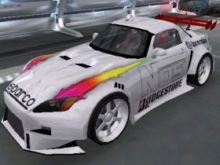
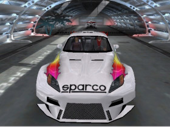
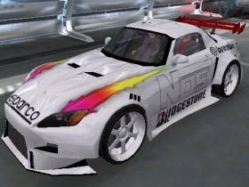
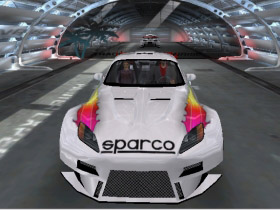

Ce site est lié à TM CarPark et si vous êtes enregistré la bas et bien vous le serez également ici. N'hésitez pas à aller y faire un tour. Nous partageons également le même forum dans le but de centraliser l'information.
Pour pouvoir disposer de tous les services de ce site, vous n'avez pas à y être inscrit. Cependant, dans le but d'éviter les abus, pour pouvoir awarder des skins, vous devez obligatoirement l'être. Récompenser les skins est très important pour le bon fonctionnement du site et je vous invite très fortement à vous inscrire et à awarder toute skin dont vous êtes satisfait.
 
